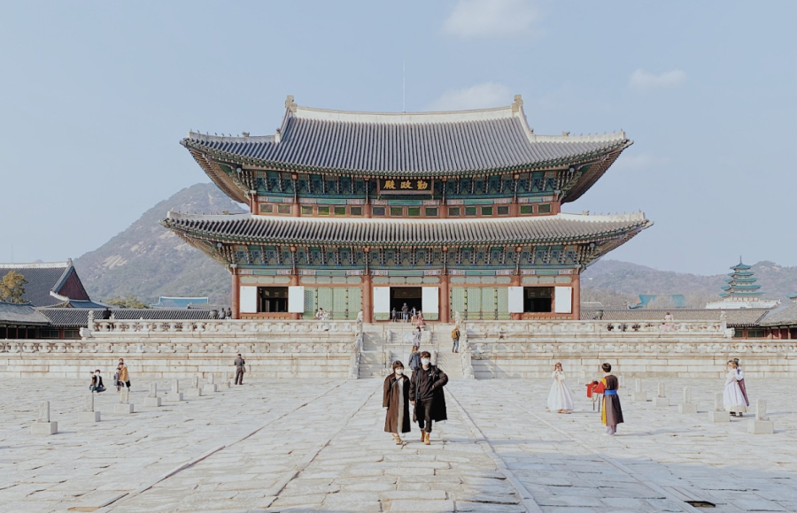

ABOUT
History and Futuer at the same time
Korean culture is a captivating blend of ancient traditions and modern dynamism. Rooted in a history that spans millennia, it thrives as a testament to resilience and innovation. From the serene beauty of traditional hanbok attire to the bustling streets of contemporary Seoul, Korea offers a rich tapestry of art, cuisine, and customs. Its warm hospitality and deep appreciation for family values make it a culture that welcomes visitors with open arms. Discover the essence of Korea through its diverse traditions, captivating art forms, and a spirit that cherishes heritage while embracing the future.
